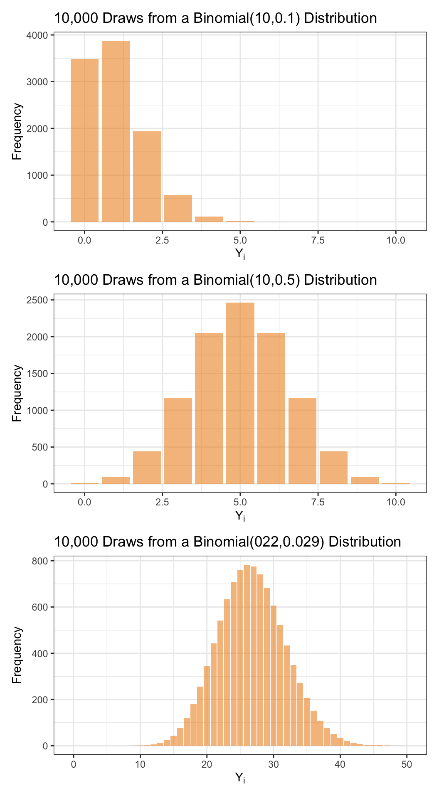
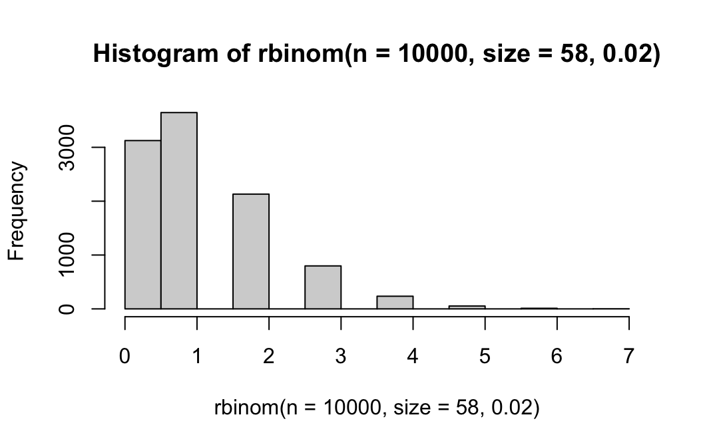
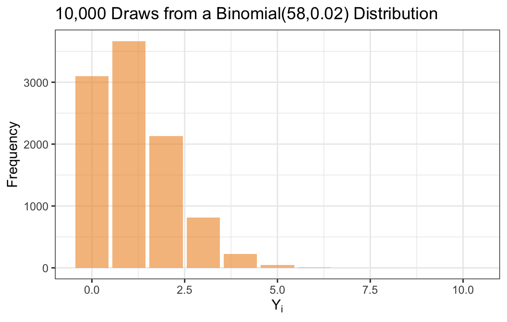
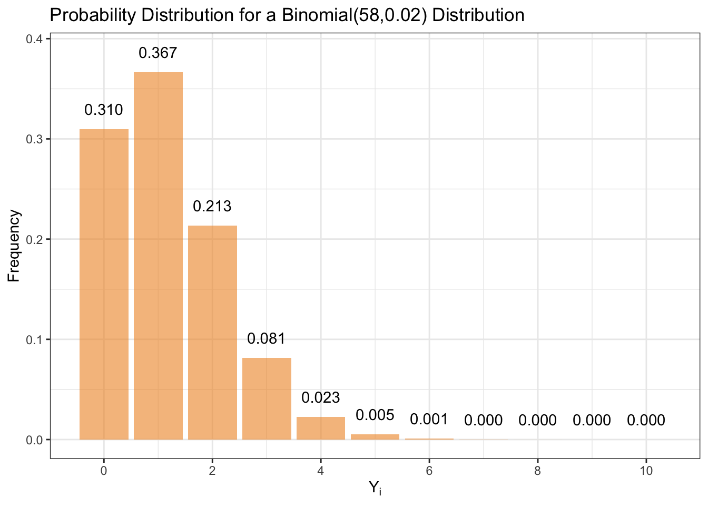
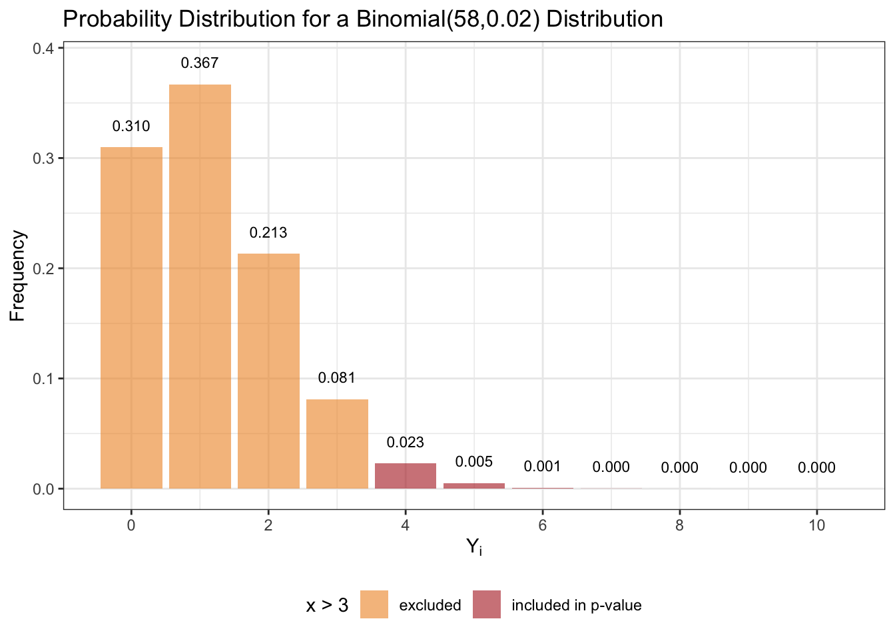

Last time we saw several ways of dealing with heteroscedasticity:
transformations, which we’ve already seen, but is not ideal since it changes the scientific question being asked.
robust variance estimators and the bootstrap — ways to estimate the variance alongside the OLS estimates of \(\beta\).
and we just started with generalized least squares.
Generalized Least Squares
The Gauss-Markov theorem says that \(\hat \beta_{OLS}\) is BLUE when \(\Sigma = \sigma^2 I\), but now we’re in a more general setting.
If we estimate \(\beta\) by minimizing the Mahalanobis distance between \(Y\) and \(X \beta\), we can get an estimator that is BLUE under arbitrary \(\Sigma\).
The squared Mahalanobis distance ..
GLS can be used for any variance-covariance matrix \(\Sigma\) including with correlated data. Supposing that \(\Sigma\) is known, one can easily show that \(\hat \beta_{GLS}\) is unbiased, that it’s the MLE if we assume \(\varepsilon \sim \mathcal N(0,\Sigma)\), and its varinace is
We show that \(\hat \beta_{GLS}\) is BLUE under heteroscedasticity by:
Writing the GLS estimator as an OLS estimator in a transformed space that has homoscedastic error, and
Applying the Gauss-Markov Theorem.
For any positive-definite matrix \(\Sigma\) we can find a nonsingular matrix \(A\) such that \(\Sigma = AA\).
Assuming \(\Sigma\) is known, then define \(Z = A^{-1} Y\) and \(C = A^{-1} X\). Linear regression in the transformed space is
\[
Z = C \gamma + \varepsilon^*,
\]
where \(\varepsilon^* = A^{-1} \varepsilon\).
Note that \(\mathbb E[\varepsilon^*] = 0\) and \(\text{Var}[\varepsilon^*] = I_n\), so we have homoscedastic errors in the transformed space.
Also note that both of the following hold:
\[\mathbb E[Z] = C \gamma
\]
\[
\mathbb E[Z] = A^{-1} \mathbb E[Y] = A^{-1} X \beta = C \beta
\]
So \(\gamma \equiv \beta\).
The OLS estimator for this transformed regression problem is
\[
\begin{aligned}
\hat \gamma_{OLS} & = (C'C)^{-1} C' Z \\
& = (X'\Sigma^{-1}X)^{-1} X' \Sigma^{-1} Y \\
& = \hat \beta_{GLS}
\end{aligned}
\]
so \(\hat \beta_{GLS}\) is equivalent to the OLS estimator in the transformed space.
By the Gauss-Markov Theorem, \(\hat \beta_{GLS}\) is BLUE for \(\gamma = \beta\) in the transformed space.
Since \(\mathbb E[\varepsilon^*] = 0\) and \(\text{Var}[\varepsilon^*] = I_n\), this implies that for any other unbiased estimator \(\tilde \beta = DZ\), \(\text{Var}(\hat \beta_{GLS}) \leq \text{Var}(\tilde \beta)\).
The optimality in the transformed space is retained by \(\hat \beta_{GLS}\) is the original space. This is because for any linear unbiased estimator in the original space \(\tilde \beta = LY\) can also be written as a linear unbiased estimator in the transformed space, \(\tilde \beta = LY = LAZ\).
So \(\hat \beta_{GLS}\) is BLUE for the linear model where \(\text{Var}[\varepsilon] = \Sigma\).
Weighted Least Squares
Returning to our special case when \(\Sigma = \text{diag}(\sigma_1^2, ..., \sigma_n^2)\), which implies the observations are independent with heteroscedasticity, this case is sometimes referred to as “weighted least squares,” because
so that we are estimating \(\beta\) by minimizing a weighted version of the SSE with weights \(1/\sigma_i^2\).
This effectively upweights units with low variance and downweights those with high variance so that estimates are selected to give better fit for units with low variance.
Estimating \(\hat \beta_{GLS}\)
In practice we don’t know the \(\sigma_i^2\) values and need to estimate them. We had the same challenge with the robust variance estimator for the OLS estimator, \(\widehat{\text{Var}}_{HW}[\hat\beta_{OLS}]\).
Recall our three potential estimation strategies:
Estimate \(\sigma_i^2\) directly from the squared residual: $_i^2 = (y_i - _i)^2
Assume \(\sigma_i^2 = V(\mu_i)\) and estimate \(V(\cdot)\) via smoothing of \(\varepsilon_i^2\) vs. \(\hat \mu_i\).
Assume \(\sigma_i^2 = V(\mu_i)\) and estimate \(V(\cdot)\) via grouping based on \(\hat \mu_i\).
However, each of these strategies requires \(\hat \mu_i = x_i' \hat \beta_{GLS}\), but estimating \(\hat \beta_{GLS}\) requires estimates of \(\sigma_i^2\).
Iteratively re-weighted least squares
The iteratively reweighted least squares algorithm.
Start with an initial estimate of \(\beta\), denoted \(\hat \beta^{(1)}\), for which we could use the OLS estimator \(\hat \beta_{OLS}\).
Inference for Binomial Propoertions and Contingency Tables
The Binomial Distribution
We will use data from a study on the teratogenicity of anti-epilectic drugs (AEDs) to motivate modeling and inference for discrete data. The data come from 922 births in 5 Boston area hospitals during 1986 and 1993 and are described in Holmes et al. (2000). The teratogenicity of anticonvulsant drugs. New England Journal of Medicine 344: 1132-1138.
The study included 316 pregnant women taking anticonvulsants (intentionally over-sampled) and 606 pregnant control women and recorded whether the infants had any malformation.
A teratogen is any agent that causes an abnormality following fetal exposure during pregnancy
Infant Status
N
Percent
No major malformation
895
97.1%
Major malformation
27
2.9%
The percent of infants with a major malformation is slightly higher than the US national rate of 2%.
Is this difference statistically significant?
What is the 95% confidence interval for the risk of having a major malformation based on this data?
The Binomial Distribution
A binomially distributed random variable is the number of events resulting from \(n\) independent Bernoulli trials, each with probability success \(\pi\).
Let \(Y_i=1\) indicate that infant \(i\) has a major malformation and \(Y_i = 0\) otherwise.
Each \(Y_i\) comes from a Bernoulli distribution such that
Note that we make use of the independence assumption. Note also that the binomial variance is a function of the mean.
library(tidyverse)
── Attaching core tidyverse packages ──────────────────────── tidyverse 2.0.0 ──
✔ dplyr 1.1.2 ✔ readr 2.1.4
✔ forcats 1.0.0 ✔ stringr 1.5.0
✔ ggplot2 3.4.2 ✔ tibble 3.2.1
✔ lubridate 1.9.2 ✔ tidyr 1.3.0
✔ purrr 1.0.1
── Conflicts ────────────────────────────────────────── tidyverse_conflicts() ──
✖ dplyr::filter() masks stats::filter()
✖ dplyr::lag() masks stats::lag()
ℹ Use the conflicted package (<http://conflicted.r-lib.org/>) to force all conflicts to become errors
library(patchwork)plt1 <-tibble(x =seq(0, 10),y =dbinom(x = x, size =10, 0.1) *10000) |>ggplot(aes(x = x, y = y)) +geom_col(fill ="#f0932b", alpha =0.6) +theme_bw() +ggtitle("10,000 Draws from a Binomial(10,0.1) Distribution") +labs(y ="Frequency", x =expression(Y[i]))plt2 <-tibble(x =seq(0, 10),y =dbinom(x = x, size =10, 0.5) *10000) |>ggplot(aes(x = x, y = y)) +geom_col(fill ="#f0932b", alpha =0.6) +theme_bw() +ggtitle("10,000 Draws from a Binomial(10,0.5) Distribution") +labs(y ="Frequency", x =expression(Y[i]))plt3 <-tibble(x =seq(0, 50),y =dbinom(x = x, size =922, 0.029) *10000) |>ggplot(aes(x = x, y = y)) +geom_col(fill ="#f0932b", alpha =0.6) +theme_bw() +ggtitle("10,000 Draws from a Binomial(022,0.029) Distribution") +labs(y ="Frequency", x =expression(Y[i]))plt1 / plt2 / plt3

The central limit theorem states that standardized sums or averages of independent random variables are asymptotically normal (under light regularity conditions).
has a zero in the denominator and is therefore undefined.
Note that in the regression scenario, the Wald statistic is \(t\)-distributed because the \(\hat \beta\) is normally distributed and dividing it by its standard error yields a \(t\)-distribution.
Here, we’re using large sample asymptotics (that the distribution of estimated proportions are normally distributed in a certain kind of limiting sense) to get a \(Z\)-score Wald statistic.
A better test: the Score Statistic
The score test averts this problem by using the null rather than the estimated standard error.
\[
p = 2 \times Pr(\mathbb Z \geq 2.02) = 0.0440
\]
where \(\mathbb Z\) is a standard normal random variable.
The evidence against \(H_0\) is slightly stronger using the more appropriate score test.
prop.test(27, 922, p =0.02, correct =FALSE)
1-sample proportions test without continuity correction
data: 27 out of 922, null probability 0.02
X-squared = 4.0547, df = 1, p-value = 0.04405
alternative hypothesis: true p is not equal to 0.02
95 percent confidence interval:
0.02020271 0.04227177
sample estimates:
p
0.02928416
(For the purposes of this class, we’ll want to specify correct = FALSE — in other settings one may want to perform the continuity correction available in prop.test, but we won’t be using it in this class.)
The \(\chi^2\) value (X-squared) in the output above is \((Z_S)^2\), which is approximately \(\chi^2\) distributed under the null. The \(p\)-value from this \(\chi^2\) test is the same as the one based on \(Z_S\).
Confidence Intervals
One way of describing the confidence interval for a parameter is:
The set of values which, when used as the null value in a hypothesis test on the observed sample, would lead to failure to reject.
Suppose we have a 95% confidence interval for \(\pi\), \((\pi_L, \pi_U)\), and were to do a hypothesis test in the observed sample using \(\alpha = 0.05\) using as our null value anything in \((\pi_L, \pi_U)\), we would fail to reject.
Recall that often we find CIs by inverting test statistics.
Let \(z_{1-\frac{\alpha}{2}}\) denote the \(1 - \frac{\alpha}/2\) quantile of a standard normal random variable.
An approximate \(100(1-\alpha)\)% Wald confidence interval is found by inverting the Wald statistic. We will fail to reject in a Wald test with \(\alpha = 0.05\) when
The “estimate part” (midpoint) is a weighted average of \(\hat \pi\) and 1/2.
The “variance part” involves a weighted average of \(\hat \pi (1-\hat \pi)\) and (1/2)(1-1/2).
Thus the interval works with an estimator that shrinks the sample proportion back towards 1/2.
We can obtain the score CI in R from prop.test()
prop.test(27, 922, p=.02,correct=FALSE)1-sample proportions test without continuity correctiondata:27 out of 922, null probability 0.02X-squared =4.0547, df =1, p-value =0.04405alternative hypothesis: true p is not equal to 0.0295 percent confidence interval:0.020202710.04227177sample estimates: p0.02928416
Exact Inference for Proportions
In the same study, investigators were interested in assessing whether exposure in utero to the specific AED carbamazepine is associated with an elevated rate of major malformation.
3 out of 58 study infants exposed to carbamazepine had a major malformation.
Is the risk for these infants compatible with the risk for the general US population (i.e., 2%)?
hist(rbinom(n =10000, size =58, 0.02))

tibble(x =seq(0, 10),y =dbinom(x = x, size =58, 0.02) *10000) |>ggplot(aes(x = x, y = y)) +geom_col(fill ="#f0932b", alpha =0.6) +theme_bw() +ggtitle("10,000 Draws from a Binomial(58,0.02) Distribution") +labs(y ="Frequency", x =expression(Y[i]))

According to these data, what is an appropriate 95% confidence interval for the risk of having a major malformation for an infant receiving carbamazepine?
We don’t have to rely on large sample approximation, the validity of which may be in question here. We can instead answer these questions using exact statistical inference by leveraging our assumption that the number of events follows a binomial distribution.
Our test statistic is $Y = $ number of infants with major malformations out of \(n = 58\) births.
Under the null hypothesis, \(Y \sim \text{Binomial}(n, \pi_0)\), i.e.
\[\mathrm{Pr}(Y = y \mid H_0 \colon \pi = \pi_0) =
{n \choose y } \pi_0^y (1-\pi_0)^{n-y}
\]
The \(p\)-value is the sum of the probabilities for events that are at least or more extreme (in the direction of the alternative hypothesis) than what we proposed, given that the null hypothesis \(H_0 \colon \pi = \pi_0\) is true.
If you observe \(Y = y\) successes, the exact \(p\)-value is
\[I(p_j \leq p) = \left\{ \begin{array}{l} 1 \text{ if } p_j \leq p \\ 0 \text{ if } p_j > p \end{array}\right. .
\]
3 of the 58 infants exposed had a major malformation. Is the risk compatible with the US average?
The relevant probabilities are
tibble(x =seq(0, 10),y =dbinom(x = x, size =58, 0.02)) |>ggplot(aes(x = x, y = y, label = scales::number_format(accuracy =0.001)(y))) +geom_col(fill ="#f0932b", alpha =0.6) +geom_text(aes(y = y + .02)) +theme_bw() +scale_x_continuous(breaks =seq(0,10,by=2)) +ggtitle("Probability Distribution for a Binomial(58,0.02) Distribution") +labs(y ="Frequency", x =expression(Y[i]))

We just want to sum up the values in the following bars:
tibble(x =seq(0, 10),y =dbinom(x = x, size =58, 0.02)) |>ggplot(aes(x = x, y = y, fill = x >3, label = scales::number_format(accuracy =0.001)(y))) +geom_col(alpha =0.6) +geom_text(aes(y = y + .02), size =3) +scale_fill_manual(values =c(`TRUE`='firebrick', `FALSE`='#f0932b'),labels =c('excluded', 'included in p-value')) +theme_bw() +ggtitle("Probability Distribution for a Binomial(58,0.02) Distribution") +scale_x_continuous(breaks =seq(0,10,by=2)) +labs(y ="Frequency", x =expression(Y[i])) +theme(legend.position ='bottom')

binom.test(3, 58, p =0.02,alternative ="two.sided",conf.level =0.95) Exact binomial testdata:3 and 58number of successes =3, number of trials =58,p-value =0.1101alternative hypothesis: true probability of successis not equal to 0.0295 percent confidence interval:0.010796480.14380463sample estimates:probability of success0.05172414
We can check that this \(p\)-value given is the same as
An exact test is when \(\mathrm{Pr}(\text{Type I Error}) \leq \alpha\), while a conservative (exact) test is when \(\mathrm{Pr}(\text{Type I Error}) < \alpha\). Remember that \(\mathrm{Pr}(\text{Type I Error}) = \mathrm{Pr}(\text{Rejecting } \, \, H_0)\).
When we say \(\alpha = 0.05\), exact tests are typically conservative (i.e., the actual Type I error rate is less than the nominal Type I error rate). This is due to the discreteness of the binomial distribution. This is the binomial analogue to the permutation test we considered previously.
To illustrate, consider the carbamazepine example. We did not reject for \(y=3\,\, (p=0.110)\). Suppose we had observed \(y = 4\). Then \(p = 0.029\). Therefore, the rejection region \(R\) for the test
Just like the exact test is conservative, the confidence interval is conservative. It is guaranteed to have at least \(100(1-\alpha)\) coverage, which leads to wider confidence intervals.
Generally the Wald test doesn’t perform well at all for proportions. Not recommended in practice at all. Score test works well for moderately sized datasets. The score tests, one tends to see only for really small samples as they’re more computationally intensive.